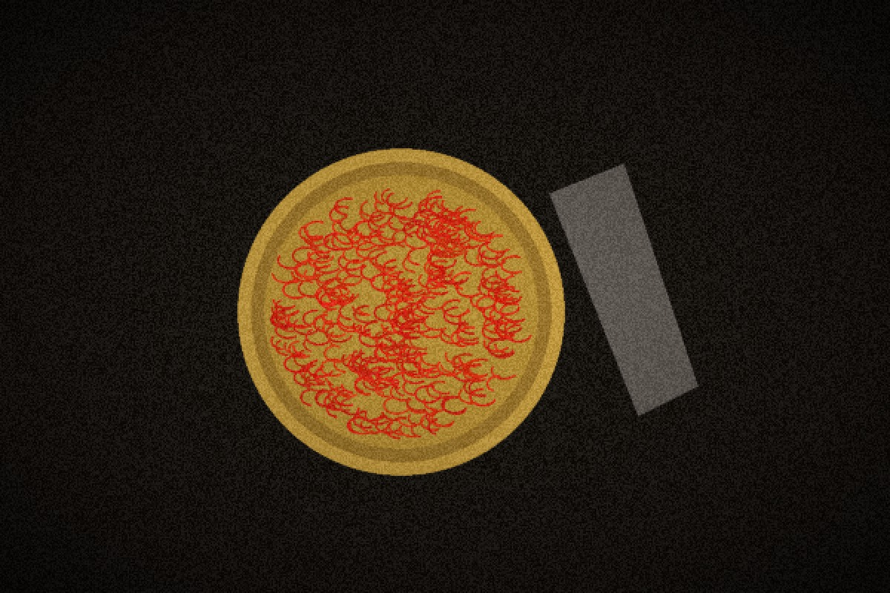
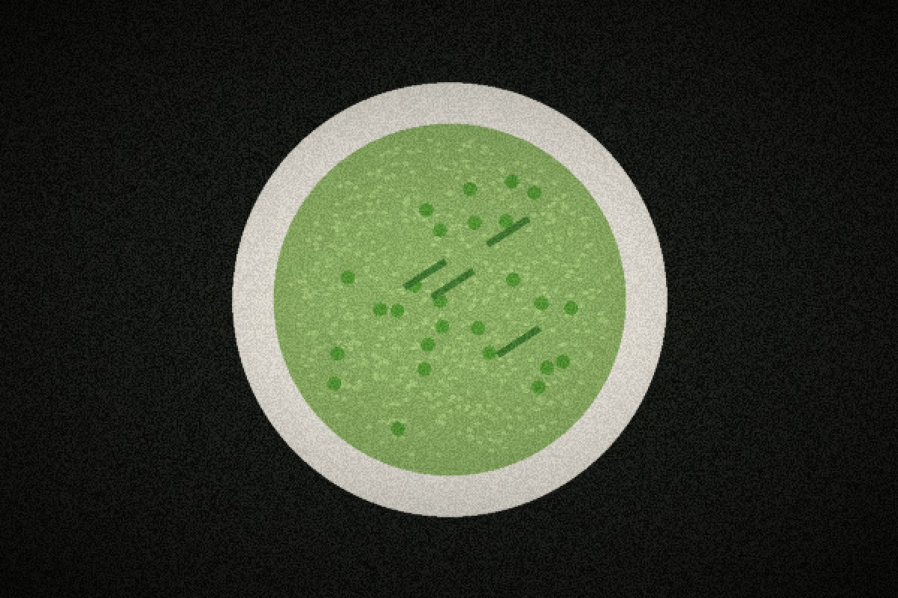
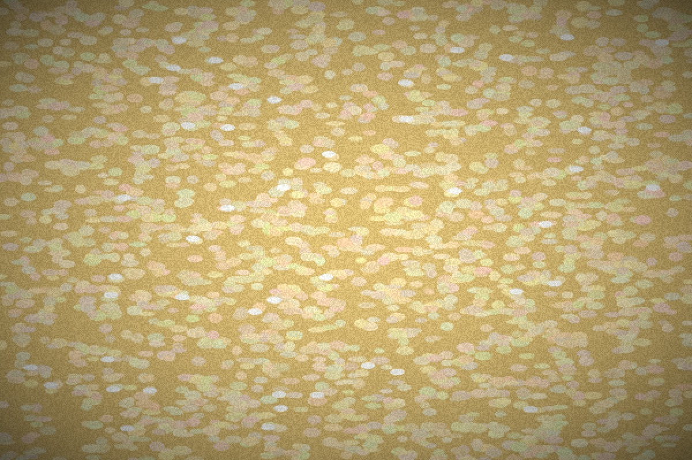

The Agronomy of Rice & The Hearth Tradition
Founded in Seattle in 2017, Risotto Garden bridges northern Italian grain heritage with regional greenhouse botany to curate uncompromised evening dinner tastings.
Slow Braising in Cast Iron & Embers
A great risotto cannot exist without an extraordinary broth. We begin every morning at dawn, gently braising heirloom root vegetables, charred shallots, fennel fronds, and bay leaves in heavy cast iron Dutch ovens over low hearth coals.
This slow extraction yields a golden, transparent elixir rich in natural glutamates and mineral depth, providing the aromatic backbone that infuses each grain during evening service.
Single-Estate Saffron Stigmas
Our Crocus sativus threads are harvested by hand at dawn in Castelnuovo before the morning sun opens the delicate violet blossoms. Each crimson stigma is dried over almond-wood coals to preserve its rich crocin and safranal essential oils.
In our Seattle kitchen, these threads steep in warm broth for twelve hours, releasing an intoxicating golden amber hue and an unmistakable earthy honeyed profile into our signature Risotto alla Milanese.

Estate Botanical Gardens & Spring Tendrils
We cultivate our own culinary herbs in controlled micro-climate greenhouses in the Puget Sound basin. Crisp young asparagus stalks, sweet garden peas, tender pea tendrils, and flowering marigolds are harvested hours before evening dinner seatings.
This intimate farm-to-hearth connection allows our kitchen to celebrate micro-seasons, transitioning seamlessly from early spring wild garlic to late autumn roasted squashes and winter truffles.

The Science of the Velvet Wave Texture
Under magnification, the magic of authentic risotto reveals itself: millions of microscopically sheared amylose starch chains suspended in an emulsion of broth, cold butterfat, and aged cheese proteins.
By resting the rice for two minutes off the heat, the starch molecules crystallize slightly into a silky, cohesive wave that coats the palate with luxurious umami while leaving zero heavy residue.
